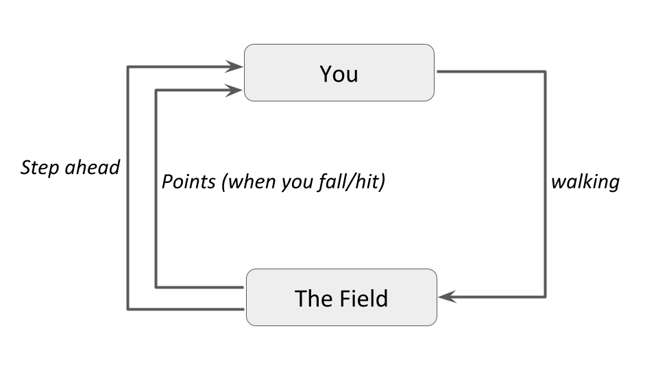
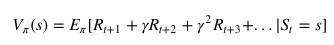
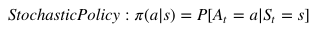
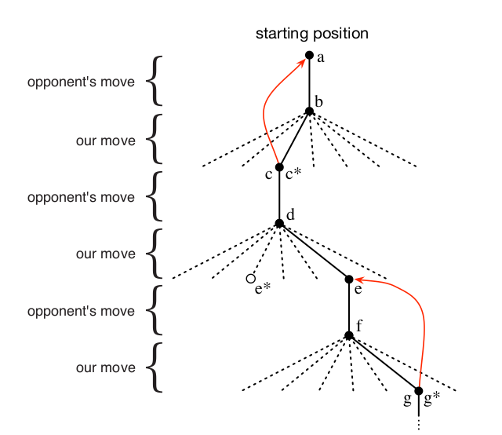
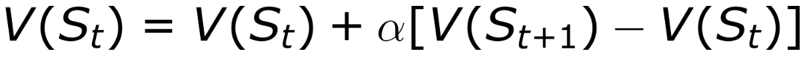

Reinforcement learning in formal terms is a method of machine learning wherein the software agent learns to perform certain actions in an environment which lead it to maximum reward.
It does so by exploration and exploitation of knowledge it learns by repeated trials of maximizing the reward.
One can conclude that while supervised learning predicts continuous ranged values or discrete labels/classes based on the training it receives from examples with provided labels or values.
Unsupervised learning tries to club together samples based on their similarity and determine discrete clusters.
Reinforcement learning on the other hand, which is a subset of Unsupervised learning, performs learning very differently.
It takes up the method of "cause and effect".
Intuition to Reinforcement Learning
Let us try to understand the previously stated formal definition by means of an example -
Imagine you are supposed to cross an unknown field in the middle of a pitch black night without a torch.
There can be pits and stones in the field, the position of those are unfamiliar to you.
There's a simple rule - if you fall into a hole or hit a rock, you must start again from your initial point.
You start walking forward blindly, only counting the number of steps you take.
After x steps, you fall into a pit. Your reward was x points since you walked that many steps.
You start again from your initial position, but after x steps, you take a detour either left/right and again move forward.
You hit a stone after y steps. This time your reward was y which is greater than x.
You decide to take this path again but with more caution.
When you start again, you make a detour after x steps, another after y steps and manage to fall into another pit after z steps.
This time the reward was z points which was greater than y, and you decide that this is a good path to take again.
You restart again, make the detours after x, y and z steps to reach the other side of the field.
Thus, you've learned to cross the field without the need of light.
Basic Concept and Terminology
Insight
In the above example, you are the agent who is trying to walk across the field, which is the environment.
Walking is the action the agent performs on the environment. The distance the agent walks acts as the reward.
The agent tries to perform the action in such a way that the reward maximizes.
This is how Reinforcement Learning works in a nutshell. The following figure puts it into a simple diagram -

And in the proper technical terms, and generalizing to fit more examples into it, the diagram becomes -
Terminology
Some important terms related to reinforcement learning are
Agent: a hypothetical entity which performs actions in an environment to gain some reward.
Action (a): All the possible moves that the agent can take.
Environment (e): A scenario the agent has to face.
State (s): Current situation returned by the environment.
Reward (R): An immediate return sent back from the environment to evaluate the last action by the agent.
Policy (π): The strategy that the agent employs to determine next action based on the current state.
Value (V): The expected long-term return with discount, as opposed to the short-term reward R. Vπ(s), is defined as the expected long-term return of the current state s under policy π.
Q-value or action-value (Q): Q-value is similar to Value, except that it takes an extra parameter, the current action a. Qπ(s, a) refers to the long-term return of the current state s, taking action a under policy π.
How Reinforcement Learning Works
There are majorly three approaches to implement a reinforcement learning algorithm. They are -
Value Based: In a value-based reinforcement learning method, you try to maximize a value function V(s).
As defined in the terminology previously, Vπ(s) is the expected long-term return of the current state s under policy π.
Thus, V(s) is the value of reward which the agent expects to gain in the future upon starting at that state s.

Policy-based: in a policy-based reinforcement learning method, you try to come up with a policy such that the action performed at each state is optimal to gain maximum reward in the future.
Here, no value function is involved. We know that the policy π determines the next action a at any state s. There are two types of policy-based RL methods -
Deterministic: at any state s, the same action a is produced by the policy π.
Stochastic: each action has a certain probability, given by the equation below -

An Example: Tic-Tac-Toe

A sequence of tic-tac-toe moves.
The solid black lines represent the moves taken during a game;
the dashed lines represent moves that the agent considered but did not make.
Our second move was an exploratory move, meaning that it was taken even though another sibling move,
the one leading to e*, was ranked higher.
Exploratory moves do not result in any learning, but each of our other moves do, causing updates as
suggested by the red arrows in which estimated values are moved up the tree from later nodes to earlier.
Reinforcement Learning Approach to solve Tic-Tac-Toe:
Set up table of numbers, one for each possible state of the game.
Each number will be our latest estimate of our probability of winning from that state.
This estimate is the state’s value and the whole table is the learned value function.
Assuming we always play Xs, then for all states with 3 Xs in a row (column and diagonal) the probability of winning is 1.0
And for all states with 3 Os in a row (column and diagonal) the probability of winning is 0.0
We set the initial values of all other states to 0.5 (representing we have a 50% chance of winning.)
We then play many games against the opponent. To select our moves:
We examine the states that would result from each of our possible moves and look up their current values in the table.
Most of the time we move greedily, selecting the move that leads to the state with the greatest value. (highest probability of winning)
Occasionally, we select randomly from among the other moves instead. (Exploration)
We then play many games against the opponent. To select our moves:
After each greedy move, from A to B, we update the value of A to be more closer to the value of B.
This is achieved using the following formula

where,
V(S_t) — value of the older state, state before the greedy move (A),
V(S_t+1) — value of the new state, state after the greedy move (B),
alpha — learning rate
This update rule is an example of Temporal-Difference Learning method, so called because its changes are based on a difference, V(S_t+1) — V(S_t), between estimates at two successive times.
For better understanding of Reinforcement Learning along eith the code,
check out the jupyter notebook
here.